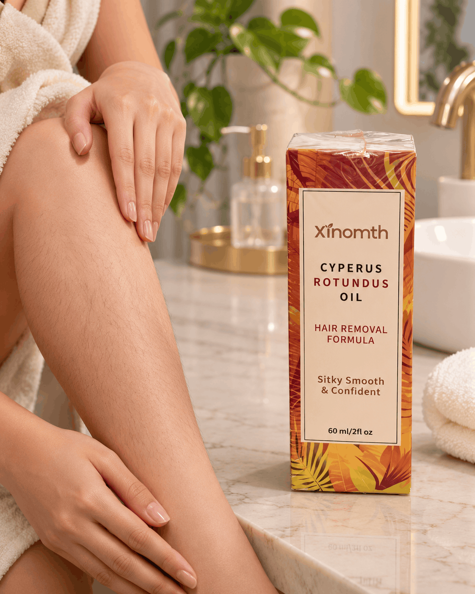

Ulei Cosmetic pentru Îndepărtarea Părului Nedorit, Îngrijirea Pielii, 60 ml
Uleiul cosmetic Xinomth Cyperus Rotundus Oil, 60 ml, este un produs destinat îngrijirii pielii și completării rutinei de îndepărtare a părului nedorit.
Prețul și stocul sunt afișate conform catalogului furnizat. Confirmă disponibilitatea, cantitatea și condițiile comerciale înainte de comandă.
DETALII PRODUS
Uleiul cosmetic Xinomth Cyperus Rotundus Oil, 60 ml, este un produs destinat îngrijirii pielii și completării rutinei de îndepărtare a părului nedorit. Formula este prezentată comercial ca o soluție cosmetică pentru persoanele care își doresc o piele cu aspect neted, catifelat și îngrijit, în special în zonele supuse frecvent epilării.
Ingredientul principal evidențiat pe ambalaj este Cyperus Rotundus, o plantă cunoscută și sub denumirea de rogoz rotund, utilizată în diferite formule cosmetice. Extractele și uleiurile derivate din această plantă sunt promovate în produsele destinate îngrijirii pielii după epilare și reducerii aspectului pilozității nedorite. Eficacitatea asupra creșterii părului depinde de formula și concentrația ingredientelor, iar rezultatele nu sunt garantate.
Formula uleioasă este concepută pentru aplicarea directă pe piele, oferind o experiență de îngrijire practică. Textura permite distribuirea produsului prin mișcări delicate de masaj, contribuind la menținerea senzației de confort și la îmbunătățirea aspectului cosmetic al pielii.
Produsul poate fi integrat în rutina de îngrijire corporală după metodele obișnuite de epilare, în funcție de recomandările producătorului și de compatibilitatea cu pielea. Aplicarea regulată este prezentată comercial ca parte a unei rutine pentru întreținerea zonelor cu păr nedorit, fără a înlocui procedurile clasice de îndepărtare a firelor de păr.
Un avantaj al formatului cosmetic îl reprezintă posibilitatea de aplicare localizată, în zone precum picioarele și brațele, cu respectarea instrucțiunilor de utilizare. Produsul poate completa îngrijirea pielii prin masaj și distribuirea uniformă a unei cantități adecvate de ulei.
Recipientul de 60 ml oferă un format compact, practic pentru depozitarea în baie, trusa cosmetică sau bagaj. Ambalajul exterior prezintă un design inspirat din elemente vegetale, în nuanțe de portocaliu, galben și maro, cu o etichetă centrală care evidențiază denumirea Cyperus Rotundus Oil.
Din perspectiva distribuției B2B, uleiul cosmetic Xinomth Cyperus Rotundus reprezintă o opțiune pentru magazinele de cosmetice, distribuitorii en-gros, comercianții de produse pentru îngrijirea corporală și platformele marketplace. Formatul de 60 ml și poziționarea comercială în categoria produselor pentru îngrijirea pielii după epilare permit integrarea acestuia în portofolii de cosmetice și accesorii pentru îngrijire personală.
Caracteristici principale
- Ulei cosmetic pentru păr nedorit: produs destinat completării rutinei de îngrijire corporală și epilare.
- Cyperus Rotundus Oil: ingredient vegetal evidențiat pe ambalajul produsului.
- Cantitate de 60 ml: format compact pentru utilizare individuală.
- Îngrijirea pielii după epilare: conceput pentru completarea rutinei cosmetice de întreținere a pielii.
- Aspect neted și catifelat: destinat menținerii unui aspect îngrijit al suprafeței pielii.
- Formulă uleioasă: permite distribuirea produsului prin masaj delicat.
- Aplicare localizată: facilitează utilizarea pe zonele corporale vizate.
- Îngrijire corporală: potrivit pentru integrarea în rutina cosmetică, conform instrucțiunilor producătorului.
- Masaj delicat: textura permite întinderea uniformă a produsului pe piele.
- Confort cutanat: produs destinat îngrijirii cosmetice a pielii.
- Utilizare complementară: poate fi folosit alături de metodele obișnuite de îndepărtare a părului nedorit.
- Ambalaj individual: potrivit pentru comercializare în magazine fizice și online.
- Design tropical: cutie decorată cu elemente vegetale în nuanțe calde.
- Format portabil: ușor de transportat și depozitat.
- Brand Xinomth: produs comercializat sub denumirea Cyperus Rotundus Oil.
- Utilizare cosmetică externă: destinat exclusiv aplicării pe piele, conform indicațiilor producătorului.
Comandă și informații
Site-ul funcționează în regim de catalog B2B. Nu există plată online sau coș de cumpărături.
Discută pe WhatsApp →